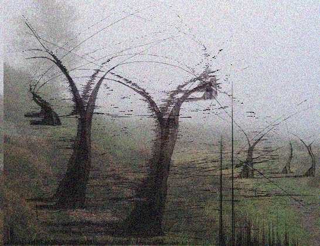

Historigastric Histories
"The multigastric imagination is forever haunted."
The Hills
The history of the hills is ill understood, no thanks to those lunatics running around with surgical equipment. And to think I once believed in them.
I can't speak much on geographical formation, hill are hills I s'pose, but you can find many mysterious monoliths dotted around them. Some of these appear to depict monogastric monsters in much the same way they appear to us today.
These drawings and engravings mostly provide us with more questions than answers, such as: how long do they live? have they been wandering around forever (wandering. thats withering! thats not wandering its withering) and most importantly, what is the infinite?
Many more strange things have been found up and around there, though properly structured expeditions further into the fog would need to be organised in order to further our understanding and make significant new discoveries, I reckon.
Strange trees scrape the sky, rising up out of the hills and bending in all sorts of unnatural directions. Perhaps these are somehow a result of monogastricity?
Folklore
The hill lurkers feature prominently in our human folklore. From heroes with a dark side, to mighty beasts and ancient evils - the multigastric imagination is forever haunted. How many of these tales are tall? Well that's part of my goal here on MAA. Creatures such as the Leg Lurker, once thought only to be a frightening tale intended to deter children from venturing too far from town, was found to be not only a reality, but an understatement if anything.
These mysterious beings have featured in our artworks and stories for hundreds and hundreds of years mostly, but not always, depicted in a negative manner. Who knows what secrets lie between the words of an old fairytale or weaved into the colors (or lack thereof) of an old manuscript illustration. If you or anyone you know have any information regarding monogastric related historical artifacts or documents please do not hesitate to contact me here, any and all help is appreciated.